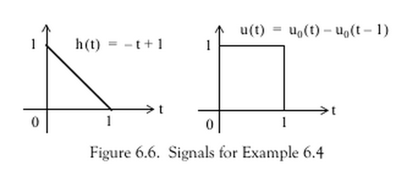

Lab 4: Time domain convolution¶
Preamble¶
Associated Class Notes¶
This lab supports the materials covered in Chapter 3.5 The Impulse Response and Convolution of the course notes. You may wish to refer to worksheet 8 for additional examples to try.
Acknowledgements¶
These examples have been adapted from Chapter 6 of Stephen Karris, Signals and Systems : With MATLAB Computing and Simulink Modeling (5th Edition)
Matlab/Simulink Concepts Introduced¶
In this lab you will:
Explore convolution with the aid of an interactive MATLAB “app”
Use the
intandheavisidefunctions from the Symbolic Toolbox to perform symbolic computation of convolution integrals.Use
laplaceandilaplaceto solve convolution problems.Use
ezplotto plot symbolic functions.
Assessment criteria¶
This will be a self-assessed exercise.
Marks can be claimed according to how many of the parts of Lab Exercises 7 and 8 have been completed.
Detailed marking criteria for this and the other labs and the project are given in the linked Assessment Criteria [Google sheet].
Setup¶
Before you start¶
If you haven’t already, create a suitable folder structure on your file-store for your labs.
I suggest
OneDrive\workspace
signals-and-systems-lab
lab01
lab02
lab03
lab04
:
Use folder OneDrive\workspace\signals-and-systems-lab\lab04 for this lab.
Preparation¶
Before we start today’s lab you will need to download and install the graphical demonstration of convolution app (convolutiondemo.m) from the GitHub respository for this module.
To install, right-click button of link as appropriate and save as to your lab04 folder.
Open and run convolutiondemo.m.
If MATLAB issues a message about the need to change the working directory or add a folder to the MATLAB path. Accept the choice given.
Lab Exercises¶
Lab Exercise 7: Graphical Demonstration of Convolution¶
In this lab exercise we will use the convolutiondemo app demonstrated in class as an aid to understanding and setting up the convolution integral for various systems including the step-response of an RL circuit.
Part 1¶
Set up the convolutiondemo app as described in the notes for the computation of the Convolution Integral for Example 6.4 from the textbook illustrated below. (Refer to Example 2 in the notes for the MATLAB settings).

Use the tool to confirm the convolution result given by this MATLAB script: exercise7.m.
Part 2¶
Taking the script exercise7.m as a model. Use the convolutiondemo tool as an aid to defining the integration limits needed to find and plot the convolution integral for the example shown below (Example 6.5 from the textbook).

Part 4¶
Adapt your procedure to determine the step response of the RC circuit given as Example 6.7 in the textbook.

Note, Parts 2 to 5 should be done in the same Live Script file as the provided Part 1 example. Separate each exercise by titled sections. Don’t forget to add explanatory text to document your work.
Lab Exercise 8: Using Laplace to Solve Convolution Problems¶
In this lab exercise we will demonstrate that time-convolution of a system response can be solved in the complex frequency domain using Laplace and Inverse Laplace transforms.
Use the inverse Laplace transform function
ilaplaceto solve the step response of the RC circuit given in exercise 7 Part 4 without convolution. You will need the Laplace transform of the circuit’s impulse response \(h(t)\) and the unit step \(u_0(t)\) (MATLABheaviside).Plot the result using
ezplotConfirm the result with a Simulink simulation
What to hand in¶
Claim¶
Up to 2 marks can be claimed if you complete Part 2 of Exercise 7, an additional 2 marks for is available for Parts 3 and 4 and 1 additional mark is available for completing Lab Exercise 8.
Submission¶
You should submit the following to the Lab 04: Time domain convolution Assignment on Canvas.
Complete the labwork self-assessment claim form and declaration.
As evidence of completion of Lab Exercise 7, you should upload
ex7_2.mlx,ex7_3.mlx,ex7_4.mlx(can be sections in one Live Scriptex7.mlx).As evidence of completion of Lab Exercise 8, you should upload
ex8.mlx,ex8.slx.
Deadline¶
The deadline for claims and submission is 4:00 pm, 17th March 2021